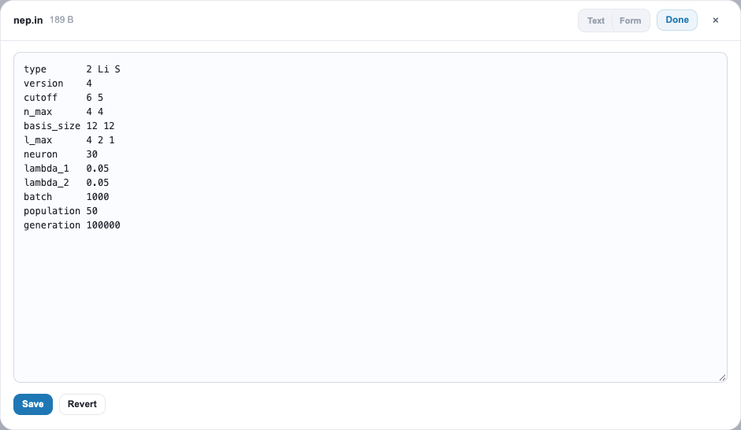
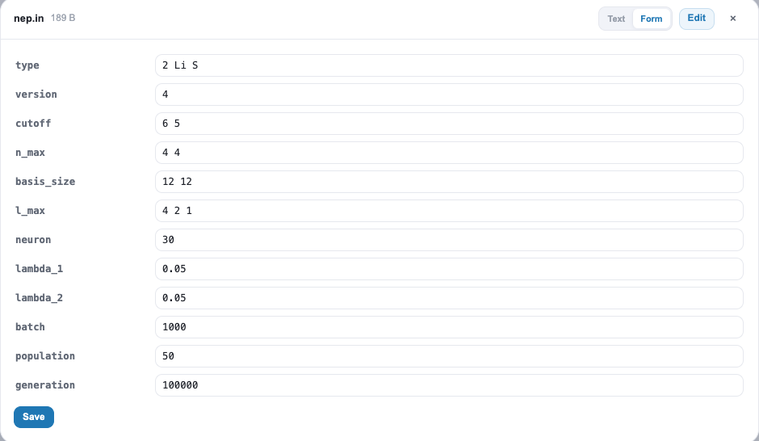
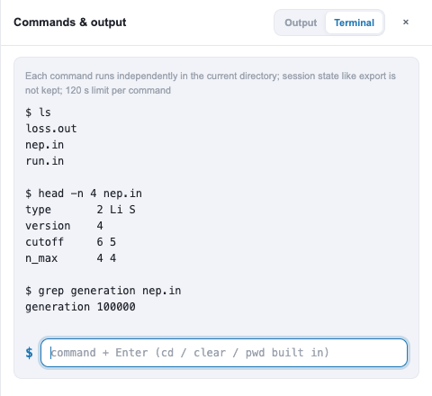

功能简介
gpumdkit.sh -server 会以启动时所在目录为根目录，开启一个基于浏览器的控制台。浏览器显示的文件始终留在远程主机上，除非你主动下载，否则不会复制到本地工作站。适合以下场景：
- 不用登录后手动查看
loss.out，就能知道 NEP 训练或 MD 运行是否正常； - 一键绘制常用图（训练、MSD、thermo、Arrhenius）并立即查看；
- 修改
nep.in或run.in中的某个关键字并安全保存； - 在远程主机上快速执行一条 shell 命令。
它不是作业启动器：控制台不会启动 GPUMD 或 NEP，不会提交调度器作业，也无法判断进程是否仍在运行。它读取的是你的计算写出的输出文件。
在远程主机上启动服务
先通过 SSH 登录，激活包含 GPUMDkit 及其绘图依赖的环境，进入希望暴露的目录，然后启动服务：
ssh <用户名>@<主机名>
conda activate gpumdkit
cd /path/to/working-directory
gpumdkit.sh -server请保持此终端打开。服务默认监听远程主机上的 127.0.0.1:8888。启动目录就是文件浏览器的根目录；界面可以进入其子目录，但文件接口无法浏览其上级目录。
从本地工作站连接
在你自己的电脑上再打开一个终端，建立隧道：
ssh -N -L 8888:127.0.0.1:8888 <用户名>@<主机名>保持它运行，然后在本地浏览器中打开：
http://127.0.0.1:8888 local workstation remote host
┌─────────────────────────┐ SSH tunnel (encrypted) ┌──────────────────────────────┐
│ browser │ ◄───────────────────────► │ gpumdkit.sh -server │
│ http://127.0.0.1:8888 │ ssh -N -L 8888:...:8888 │ 127.0.0.1:8888 (files here) │
└─────────────────────────┘ └──────────────────────────────┘第一个 8888 是本地端口，最后一个是远程服务端口。端口被占用时：
| 被占用的端口 | 处理方式 |
|---|---|
| 本地 | 换一个本地端口：ssh -N -L 8890:127.0.0.1:8888 <用户名>@<主机名>，然后访问 http://127.0.0.1:8890。 |
| 远程 | 用其他端口启动服务 gpumdkit.sh -server 9000，再转发：ssh -N -L 8888:127.0.0.1:9000 <用户名>@<主机名>。 |
在本地终端按 Ctrl+C 关闭隧道，在远程终端按 Ctrl+C 停止服务。
界面导览
每个目录对应一个内容区。只有存在相应数据时才会出现相应区块：没有 loss.out 的目录不会显示损失曲线，没有图片的目录不会显示图片条。把鼠标移到下面的编号（或右侧条目）上可高亮对应区域，点击图片可放大。
NEP 训练目录

A NEP training folder. Hover a number or an entry; click the image to enlarge.
一个 NEP 训练目录。悬停编号或条目可高亮对应区域，点击图片可放大。
GPUMD 运行目录

A GPUMD run folder. Click the image to enlarge.
一个 GPUMD 运行目录。点击图片可放大。
截图来自示例运行，你的目录会显示你自己的数据。
哪些文件会触发哪些内容
| 目录中的文件 | 控制台显示什么 |
|---|---|
loss.out |
损失曲线。若同时有 nep.in，还会显示进度条（当前代数与 generation 目标的对比）和参数面板。 |
neighbor.out 与 run.in |
MD 监控：近邻数与其最大值的对比，以及相对 run.in 中 run 步数的进度。 |
thermo.out（没有 neighbor.out） |
由行数和 dump_thermo 估算的近似 MD 进度，规则与 gpumdkit.sh -time gpumd 相同。 |
.png / .jpg 图片 |
缩略图条；点击可进入大图查看（← → 切换，Esc 关闭）。 |
| 绘图所需的文件（见下） | 对应的操作卡片。 |
| 子目录 | 带条目数的列表，方便进入 300K/、400K/ 等目录。 |
绘图操作
操作中的每张卡片都会在当前目录运行一个固定的 GPUMDkit 绘图脚本。卡片会告诉你图是否已生成及生成时间；Run 生成（或重新生成），View 打开结果。如果图片比其输入文件更旧，会被标记为已过期。Run all 运行所有卡片。
| 操作 | 目录中所需文件 | 生成 |
|---|---|---|
| MSD | msd.out |
msd.png |
| SDC | msd.out |
sdc.png |
| MSD & SDC | 七列的 msd.out |
msd_sdc.png |
| MSD 收敛性 | msd_step*.out |
msd_convergence.png |
| VAC | sdc.out |
vac.png |
| Thermo | thermo.out |
thermo.png |
| 训练 | loss.out、energy_train.out、force_train.out |
train.png |
| 训练密度图 | 与“训练”相同 | train_density.png |
| 训练与测试 | 六个训练/测试的能量、力、应力 .out 文件 |
train_test.png |
| 预测 | energy_train.out、force_train.out |
prediction.png |
| Arrhenius 电导率 | 至少两个 NNNK 目录，每个含 msd.out 和 thermo.out |
Arrhenius_sigma.png |
| Arrhenius 扩散系数 | 至少两个 NNNK 目录，每个含 msd.out |
Arrhenius_D.png |
需要额外参数的绘图（例如带元素列表的 -plt msd_all）不会显示为卡片，请在命令抽屉的终端中运行。
示例：由多个温度绘制 Arrhenius 图
每个温度一个目录，命名为 300K、400K、500K 等，每个目录放该次运行的 msd.out（电导率还需要 thermo.out）：
diffusion/
├── 300K/ msd.out thermo.out
├── 400K/ msd.out thermo.out
├── 500K/ msd.out thermo.out
└── 600K/ msd.out thermo.out在 diffusion/ 中启动服务（或在文件浏览器中进入该目录）。存在至少两个温度目录时会出现 Arrhenius 卡片，点击 Run，再点击 View。图片会写在数据旁边（Arrhenius_D.png、Arrhenius_sigma.png）。拟合是否有意义，例如各温度的 MSD 是否收敛，需要你自己判断：请先在每个温度目录里用 MSD 与 MSD 收敛性卡片检查。
跟踪 NEP 训练
打开训练目录（包含 nep.in 和 loss.out 的目录）。
- 损失曲线。 两个坐标轴默认为对数刻度；X Log、Y Log 按钮可将对应坐标轴切换为线性。点击图例条目可隐藏或显示某一项损失，悬停可读取采样值，缩放按钮可放大查看。当代数重新从头计数（续跑）时，横轴会变为记录序号。
- 进度。 目标取自
nep.in中的generation；如果nep.in没有该行，则假定 NEP 默认的 100000，卡片上会注明。控制台至少看到两次loss.out采样后才会显示速度和 ETA。 - 参数。 右侧面板列出
nep.in的关键字；open file 可查看完整文件。
可在顶栏设置自动刷新（5 s 到 60 s）以保持视图最新。默认关闭，浏览器标签页隐藏时会暂停。进度条增长说明 loss.out 正在写入新记录，但并不能证明进程仍然存活。
跟踪 MD 运行
在含有 neighbor.out 的目录中，监控会绘制径向和角向近邻数以及 neighbor.out 报告的最大值。虚线最大值仅作参考，不是稳定性判据。进度是 MD 步数与 run.in 中各 run 命令步数之和的对比；ETA 需要两次采样。
安全地编辑文件
点击文件名打开预览面板。512 KB 以内的文本文件完整显示；更大的文件只显示头部和尾部，且不能编辑。数值文件显示为表格，并可选择绘图。


点击 Edit 使文件可编辑。对于 nep.in、run.in 等关键字文件，可以在文本与表单视图之间切换，两者编辑的是同一份草稿。Save 以原子方式写入文件。
如果文件在你打开之后发生了变化，例如被其他进程重写，保存会被拒绝，你可以选择 Reload、Keep my draft 或 Overwrite。在有未保存修改时切换到其他文件，会先询问确认。
New 创建空文件或文件夹，Upload 从工作站上传文件，Download 下载选中的远程文件。创建和上传都不会覆盖已有的同名项。
编辑
nep.in不会重启任何程序。请自行在终端或调度系统中启动或重启nep与 GPUMD，再让控制台显示新的输出。
命令抽屉
顶栏的终端图标会打开 Commands & output 抽屉。
- Output 列出 Run 按钮执行过的操作：命令、运行目录、耗时、状态和输出。
- Terminal 在远程主机上执行 shell 命令。

每条命令独立使用 bash -c 在当前目录运行，超过 120 s 会被终止。export 等状态不会在命令之间保留，cd、pwd、clear 为内置命令。没有取消按钮。由于终端执行的是真实命令，它不受文件浏览器所显示目录的限制。
服务选项与安全
gpumdkit.sh -server [port] [-b <address>] [-pw <password>]
gpumdkit.sh -server -h| 选项 | 默认值 | 说明 |
|---|---|---|
port |
8888 |
Web 服务使用的端口 |
-b <address> |
127.0.0.1 |
监听的网络地址 |
-pw <password> |
回环地址下可选 | 登录密码；监听其他地址时必须设置 |
- 建议保持默认的回环地址，并使用 SSH 隧道。 绑定到
0.0.0.0等其他地址会把控制台暴露在主机网络上，必须设置密码（省略-pw时会提示输入），且不使用 HTTPS。 - 连续输错五次密码后，登录会被锁定 60 s。
- 只有文件接口被限制在启动目录内，终端不受限制，因此请只面向你信任的用户运行。
- 请勿把密码写进共享脚本或 shell 历史。
常见问题
| 现象 | 排查 |
|---|---|
| 浏览器无法连接 | 远程服务和本地隧道都必须仍在运行，且转发的端口一致。 |
| 显示的文件不对 | 根目录就是启动 gpumdkit.sh -server 的目录。请停止服务，并在目标目录中重新启动。 |
| 没有出现某个操作卡片 | 目录中缺少上表所需的文件之一。 |
| 绘图操作失败 | 请在装有 GPUMDkit 及绘图依赖的环境中启动服务，并在 Output 标签页查看错误信息。 |
| 进度不变化 | 只有 loss.out 或 MD 输出写入新记录时才会变化。控制台不是进程或调度器监控。 |
| 保存被拒绝 | 文件在磁盘上已被修改。请选择 Reload、Keep my draft 或 Overwrite。 |
| 命令似乎卡住 | 命令超过 120 s 会被终止；长时间任务请放到自己的终端或调度系统中。 |